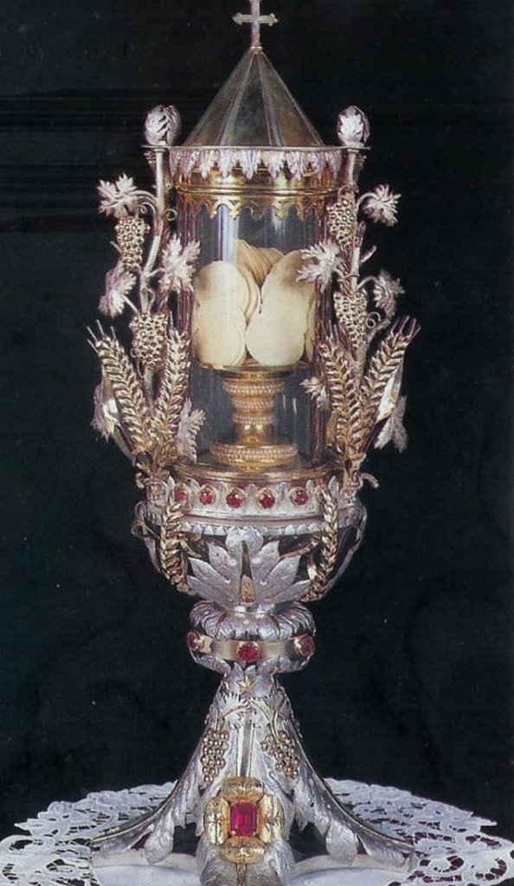
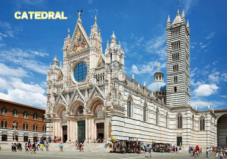
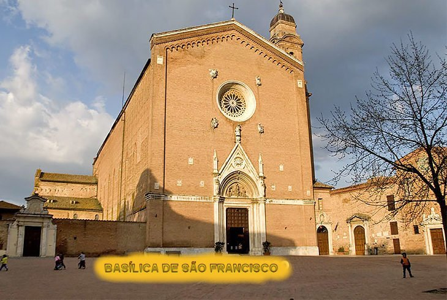

MILAGRE COMPROVADO

AS HSTIAS DO MILAGRE
Em 1922, o cardeal Tacci, acompanhado pelo arcebispo de Siena e quatro Bispos, examinou novamente as Hstias Milagrosas. Como em todos os exames anteriores, elas se mostraram perfeitamente conservadas e com o sabor fresco. Outra investigao ocorreu em 1950, quando as Hstias foram transferidas para um Deposito Especial bem mais elaborado e mais bonito. Nessa altura haviam 223 hstias, as outras foram distribudas em comunho e utilizadas para degustao durante os vrios exames.
Em 5 de agosto de 1951, outro roubo sacrélego ocorreu na Igreja de São Francisco envolvendo exatamente as mesmas Hstias Milagrosas. Desta vez, porm, o ladro levou apenas o precioso recipiente (o novo Cibrio, que era um Deposito Especial), derramando as Hstias no altar. O Arcebispo ento colocou as Hstias num Cibrio de prata e o lacrou. No ano seguinte, o Arcebispo, na presena de vrias testemunhas, tirou as Hstias do Cibrio, contou para conferir o número delas, examinou-as e mandou fotografé-las. A seguir as Hstias foram hospedadas numa outra Bela Custdia especialmente construda para elas.
O exame mais recente das Hstias Consagradas foi realizado em 2014, que incluiu investigao de superfécie sob microscpio digital, determinação do nucleotdeo adenosina trifosfato (ATP), testes de cultura, etc. Ficou absolutamente confirmado que as Hstias permanecem inalteradas e livres de qualquer anormalidade ou decomposioù, num acontecimento contrrio as leis da natureza, mas que, sobretudo prova que elas estáo sob o domnio misericordioso de DEUS.

Duomo (Catedral) de Siena

Basílica de São Francisco
As 223 Hstias Milagrosas estáo preservadas até hoje na Igreja (hoje Basílica) de São Francisco, e são exibidas publicamente vrias vezes por ano, inclusive no dia 17 de cada más (porque foi o dia do más em que o roubo foi descoberto pelos paroquianos).
Anualmente na festa de Corpus Christi, as Hstias no Cibrio, são conduzidas em procissão pelas ruas de Siena.
Como se trata de uma inquestionvel manifestao Divina natural que deve existir em cada pessoa aquela vontade ntima e um grande desejo interior, unido a curiosidade de ver e conhecer estas Hstias Consagradas. Assim sendo, se voc tiver realmente a oportunidade de visitar a ItÉlia, aproveite para ir também a Siena, a fim de apreciar mais este primoroso e belo milagre do SENHOR NOSSO DEUS.